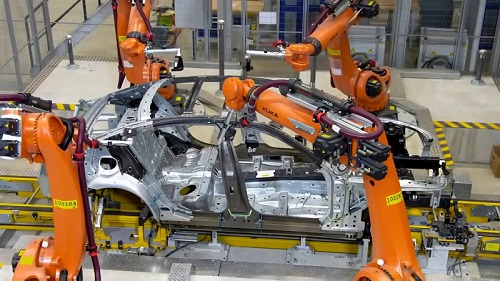
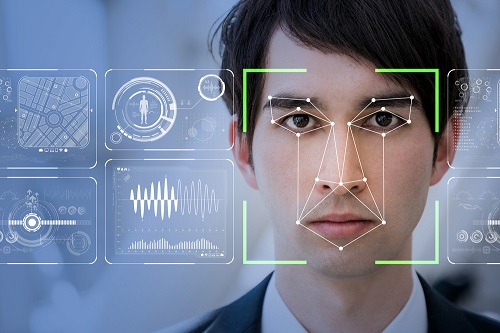
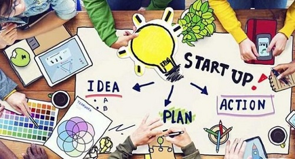
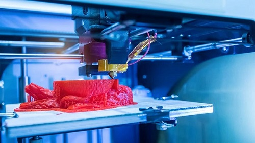

Perkembangan dan Bisnis Dalam Bidang IT dalam 5 Tahun Kedepan
Perkembangan teknologi pada saat ini sudah tidak dapat dibendung. Dalam hitungan beberapa tahun belakangan ini perkembangan teknologi sangatlah pesat. Mulai dari smartphone yang kita gunakan sekarang ini, perkembangannya sangatlah cepat, mulai dari smartphone yang dulunya tidak memiliki camera, sensor sidik jari, sensor wajah, sensor iris mata, bahkan teknologi seperti VR (Virtual Reality) yang kini sudah dapat kita rasakan di smartphone yang kita genggam saat ini. Oleh karena itu saya sebagai Mahasiswa Teknik Informatika akan memberikan pandangan saya terhadap perkembangan teknologi serta bisnis dalam dunia IT di 5 tahun kedepan. Berikut merupakan pandangan saya terhadap perkembangan teknologi serta bisnis dalam dunia IT di 5 tahun kedepan :
- Teknologi AI (Artificial Intelligence) dapat menggantikan pekerjaan manusia
- Makin banyaknya sensor-sensor yang dibuat dan dimanfaatkan
- Semakin banyaknya perusahaan-perusahaan Startup baru
- Internet of Things
- Bisnis dalam segala bidang memanfaatkan 3D Printing
Artificial Intelligence atau yang biasa dikenal dengan kecerdasan buatan pada saat ini mulai merambah ke dunia nyata. Dulu kita hanya melihat robot-robot canggih yang dapat membantu segala pekerjaan kita dalam film-film atau animasi saja. Kini, kita dapat menemukan itu semua dalam dunia nyata. Bahkan beberapa perusahaan mobil seperti BMW sudah mengandalkan robot untuk memproduksi mobilnya. Bukan tidak mungkin bahwa dalam 5 tahun kedepan tenaga manusia sudah banyak digantikan oleh robot-robot yang canggih dan pemilik/pengusaha tidak perlu mengeluarkan uang yang cukup banyak untuk memberikan gaji kepada para pekerja.
Teknologi yang berbasis sensor makin banyak digunakan dalam teknologi-teknologi terbaru nantinya yang akan diciptakan. Dengan sensor-sensor kita dapat dimudahkan dalam segala sesuatu dan memberikan keamanan yang mungkin dapat berguna dalam kehidupan kedepannya. Pada saat ini kita telah banyak menemukan sensor-sensor yang telah tertanam dalam smartphone yang kita punya saat ini, contohnya seperti sensor sidik jari, sensor wajah, sensor iris mata, sensor gyroscope dan masih banyak lainnya. Dalam 5 tahun kedepan bukan tidak mungkin barang-barang yang mungkin tidak kita bayangkan akan dipasangkan sensor-sensor demi keamanan dan kenyamanan. Misalkan, dompet bisa saja nantinya dompet mempunyai sensor pendeteksi keberadaannya dan sensor sidik jari sebagai keamanan dari dompet tersebut. Hal in diungkapkan oleh Ted Schlein dari Kleiner Perkins. “Dari sensor kita bisa mendapat banyak data,” tuturnya.
Perkembangan bisnis Startup di Indonesia bisa dikatakan cukup pesat dan menggembirakan. Setiap tahun bahkan setiap bulan banyak founder (pemilik) Startup baru bermunculan. Menurut dailysocial.net, sekarang ini terdapat setidaknya lebih dari 1500 Startup lokal yang ada di Indonesia. Potensi pengguna internet Indonesia yang semakin naik dari tahun ke tahun tentunya merupakan suatu lahan basah untuk mendirikan sebuah Startup.
Berdasarkan beberapa riset, pada tahun 2013 saja diperkirakan pengguna internet di Indonesia mencapai 70 juta orang, bisa dibayangkan berapa jumlah user internet Indonesia beberapa tahun kedepan. Selain itu daya beli masyarakat yang meningkat seiring dengan naiknya pendapatan perkapita masyarakat negeri ini ikut mempengaruhi perkembangan industri digital. Saat ini perusahaan-perusahaan startup lokal yang sudah dikenal dan dirasakan manfaat oleh orang banyak diantaranya adalah Gojek dan Tokopedia
Oleh karena itu, bukan tidak mungkin dengan perkembangan teknologi yang sangat pesan dalam 5 tahun kedepan bakal banyak muncul perusahaan-perusahaan startup terbaru.
Pada zaman Revolusi Industri 4.0 saat ini apapun yang ada sudah dapat terhubung dengan internet karena memang saat ini internet sudah dapat dijangkau oleh setiap orang dengan mudah dimana saja. Bukan tidak mungkin nantinya pada sekitar 5 tahun kedepan para perusahaan teknologi akan membuat sesuatu yang dapat terhubung dengan internet, misalnya mungkin saja nantinya ada pakaian yang dapat terhubung dengan internet, atau mungkin tas yang dapat terhubung dengan internet, kita tidak pernah tau cepat atau lambat zaman tersebut bakal hadir di dunia nyata ini.

Mencetak sesuatu dalam bentuk tiga dimensi bukanlah hal yang mustahil pada saat ini. Kita bisa mencetak apapun yang kita mau kedalam bentuk tiga dimensi dengan menggunakan alat ini. Bukan tidak mungkin kita bakal mengalami zaman dimana dalam bidang Kedokteran proses transplantasi jantung dapat memanfaat jantung buatan hasil dari 3D Printing yang telah dibuat. Dan dalam bidang Industri bakal banyak barang-barang dan produk yang dibuat dengan teknologi cetak tiga dimensi ini.
Jadi itulah beberapa pemikiran dan pandangan saya sebagai Mahasiswa Teknik Informatika terhadap perkembangan teknologi serta bisnis dalam dunia IT di 5 tahun kedepan. Sebagai Mahasiswa IT kita juga tidak bisa senang terlebih dahulu karena mungkin masa depan akan kita raih dengan banyaknya peluang pekerjaan yang kita dapat. Di dalam Kampus kita hanya mendapatkan sebesar 20% bekal kita untuk menghadapi zaman tersebut. Lalu darimanakah datangnya 80% sisanya yang lain ? Kita dapat mencari sisanya sebesar 80% yang lain dengan berbagai cara, misalnya dengan mengikuti pelatihan-pelatihan kemampuan di bidang IT yang lain yang dapat menunjang keahlian kita seperti Belajar Mengcoding Robot dan belajar Microcontroller seperti Arduino, Raspberry Pi dan masih banyak yang lainnya. Selain itu kita juga harus belajar sendiri secara otodidak apapun itu, terus menggali lebih dalam hal-hal yang telah kita dapatkan di bangku kuliah agar pengetahuan dan kemampuan kita dapat bertambah semakin banyak.